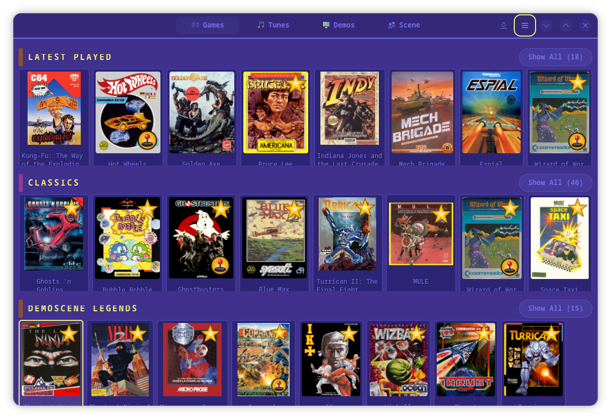

What it does
Breadbin turns your C64 collection into a cover-art kiosk organised by genre, with a demoscene browser and a SID music player — all styled with the authentic Pepto VIC-II colour palette.
🎮 Games
One horizontal strip per genre; click a cover to see details and play. Genres with more than 8 entries get a Show All button that slides open a full grid.
🖥️ Demos
Same kiosk layout, grouped by demoparty, with data sourced from CSDb.
🎵 Tunes
SID music jukebox with a live oscilloscope visualiser.
Click any card to open a detail dialog with the full box art, metadata, and Play / Download buttons.
Requirements
| Dependency | Purpose |
|---|---|
VICE (x64sc) |
Launching games and demos |
| GTK 4 + libadwaita | UI toolkit (usually pre-installed on modern desktops) |
C64 Forever is optional — Breadbin detects it automatically and uses it for ROM support when present. Without it, VICE's bundled free ROMs are used.
Point Breadbin at your game collection with the C64_LIB environment
variable (default ~/Games/Commodore/C64):
export C64_LIB="/path/to/your/c64/games"Install
Arch Linux (recommended)
Build and install system-wide (build runs as you; only the install step needs root):
packaging/install.sh build # cargo build --release (as your user)
sudo packaging/install.sh # copy files into /usr (as root)Then launch from your application menu or run breadbin in a terminal.
To build an AUR-style package instead:
cd packaging/arch
makepkg -siUbuntu / Debian
packaging/install.sh build
sudo packaging/install.shOr build a .deb:
cp -r packaging/debian debian
dpkg-buildpackage -us -uc -b
sudo dpkg -i ../breadbin_*.debFrom source (dev loop)
cargo build # debug build — no --release needed
./breadbin.sh # sets GSETTINGS_SCHEMA_DIR and launchesbreadbin.sh picks up target/release/breadbin if present,
falls back to target/debug/breadbin.
How data is managed
Breadbin stores everything in ~/.breadbin/ (override with
BREADBIN_HOME). On first run it downloads and builds the indexes
it needs — nothing is bundled in the binary or the package:
| File / folder | Contents |
|---|---|
c64_index.tsv | Ranked game catalogue (GameBase64 + Internet Archive) |
gb64.sqlitedb | GameBase64 database (~17 MB, cached once) |
covers/ + covers_index.tsv | Box-art thumbnails (Libretro set) |
demos_index.json | Demoscene index from CSDb |
sids/ | SID music files |
Use Refresh catalogue in Preferences to rebuild the game index.